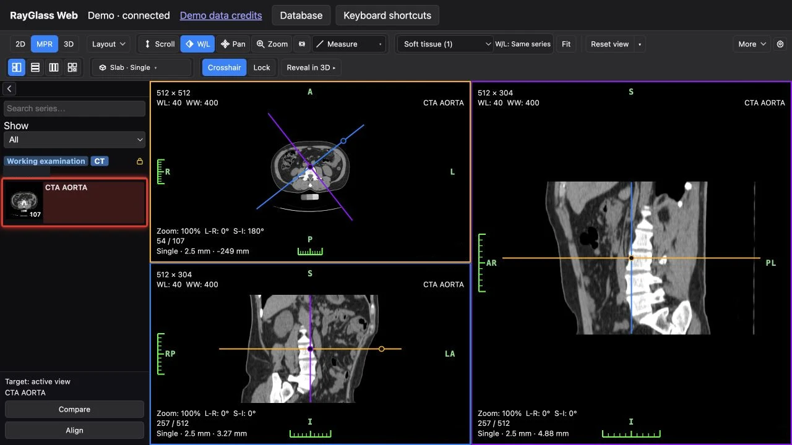
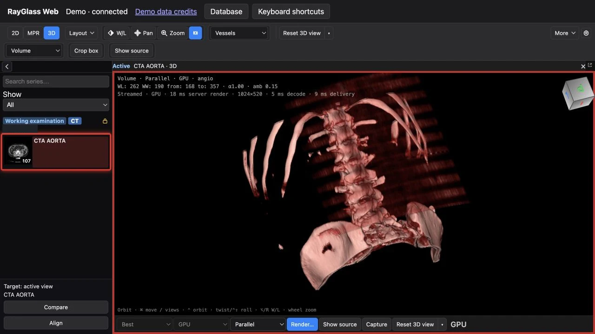
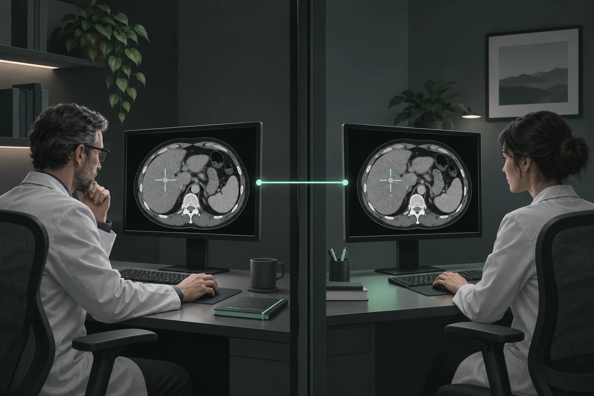
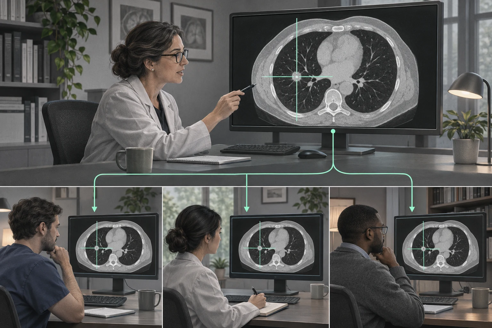

2D and cine
Scroll stacks, play supported multiframe series, and measure directly on the image. View supported DICOM overlays and referenced presentation graphics.
DICOM viewer for desktop and browser
Our goal is to give clinicians a full-featured DICOM viewer that opens large studies quickly and stays responsive throughout a read.
Enter your email and we’ll send you a link when the demo server is ready.
For research, education and evaluation. Clinical use is prohibited under the evaluation license.

Reading tools
Review radiographs, CT and MRI in one workspace. Scroll through images and make measurements in 2D, inspect anatomy at an angle with linked MPR, and explore volumes in 3D.

Scroll stacks, play supported multiframe series, and measure directly on the image. View supported DICOM overlays and referenced presentation graphics.
Rotate the crosshair to reconstruct linked planes at an angle. Follow anatomy across planes and adjust slab thickness or projection.
Orbit and crop CT volumes, switch between volume rendering and maximum intensity projection, and return to the source planes.
Capture views for review or teaching. On desktop, work with layers, fusion and DICOM SEG import and export.
Local and streamed
Open a study locally on your desktop or stream it in the desktop app or browser. The same RayGlass rendering engine, core controls and reading shortcuts let you switch without relearning the viewer.
Import DICOM folders into a local study database, or query and retrieve from PACS over DIMSE or DICOMweb.
Scroll, window and rotate views interactively, with lossless viewport frames when the view settles. Source DICOM files stay on the server by default.
Flag images and series. With server-side reader storage enabled, pick up saved reading positions and committed measurements when you return.
Median of three runs on one streamed benchmark study. Study size, server setup and network conditions affect performance.
Collaborative reading rooms
Open a live reading room from your workstation. Everyone follows the same 2D images, linked MPR or 3D view while the source DICOM files stay on the server.
Invite a specialist for a second opinion. Your team can follow along as they navigate the images and point out what they see.
Invite the referring veterinarian or another clinician with study access to see the images with you and connect the findings to your report.

Readers with hosting permission start a room from the viewer’s Collaborate menu. Colleagues with study access can join by link. The link expires when the room closes.
Give a colleague the controls or let several readers work in the shared view. Scroll, adjust the display, make measurements and mark findings with the familiar viewer tools.
The host can take back control and restore their last shared view. Readers return to their own reading position when they leave.
RayGlass Teaching
A server add-on for live case walkthroughs and interactive recorded lessons built around the scan itself.

Invite learners into a browser room to follow the instructor’s view. Grant a learner control or let them explore privately.
Pause a recorded walkthrough and interact with the same case, then resume at the instructor’s view.
Use chapter markers to seek the recording and restore the matching scan view.
Research and academia
Use the RayGlass Python API in Jupyter notebooks and scripts for academic projects, quantitative imaging and reproducible analysis.
Load a DICOM series as a NumPy volume with its spatial affine, render images for review, or export NIfTI and NRRD volumes for downstream analysis.
View the RayGlass Python packagepython -m pip install rayglassimport rayglass as rg
study = rg.open("./dicom")
volume = study.volume()
voxels = volume.hu
affine = volume.affine
study.export("volume.nii")Use Python 3.10 or later and point ./dicom to a local DICOM CT series.
Get RayGlass
Start with the browser demo, install the desktop app, or use the Python package in a research workflow.
Apple silicon. Open the signed and notarized disk image and copy RayGlass to Applications.
Windows x64 with Microsoft Edge WebView2 and a hardware GPU with a current driver.
Open the ZIP’s Properties, select Unblock if offered, and apply the change. Extract the ZIP and run rayglass-desktop.exe from the RayGlass folder.
Script DICOM opening, image rendering and volume export. The Python package requires Python 3.10 or later.
pip install rayglass